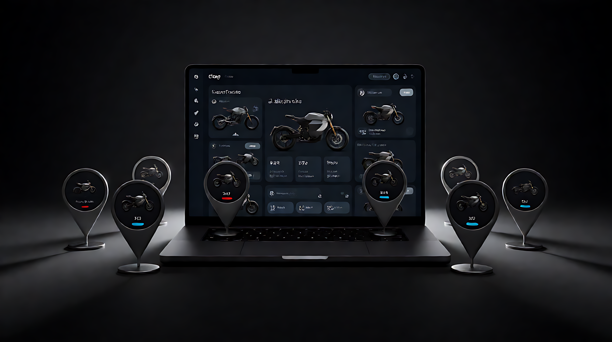
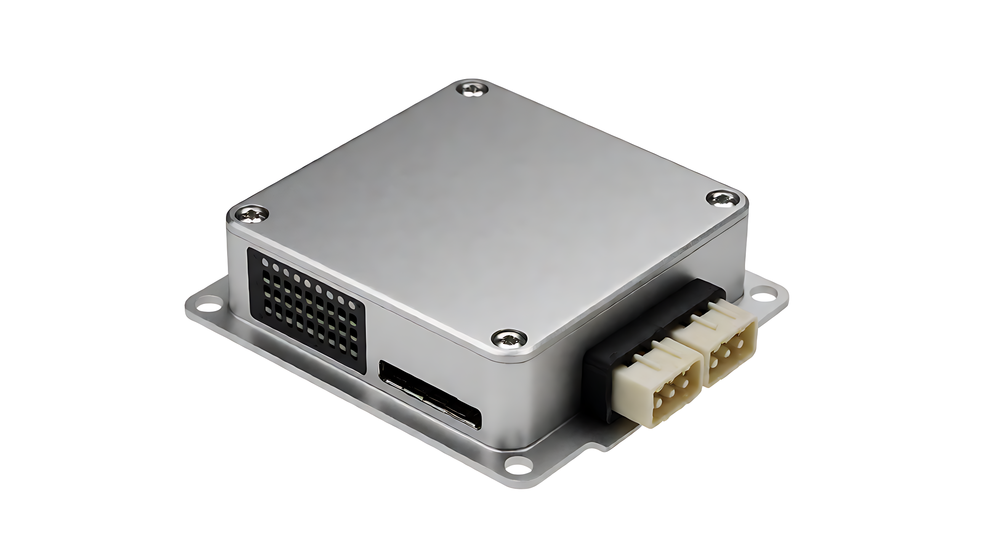
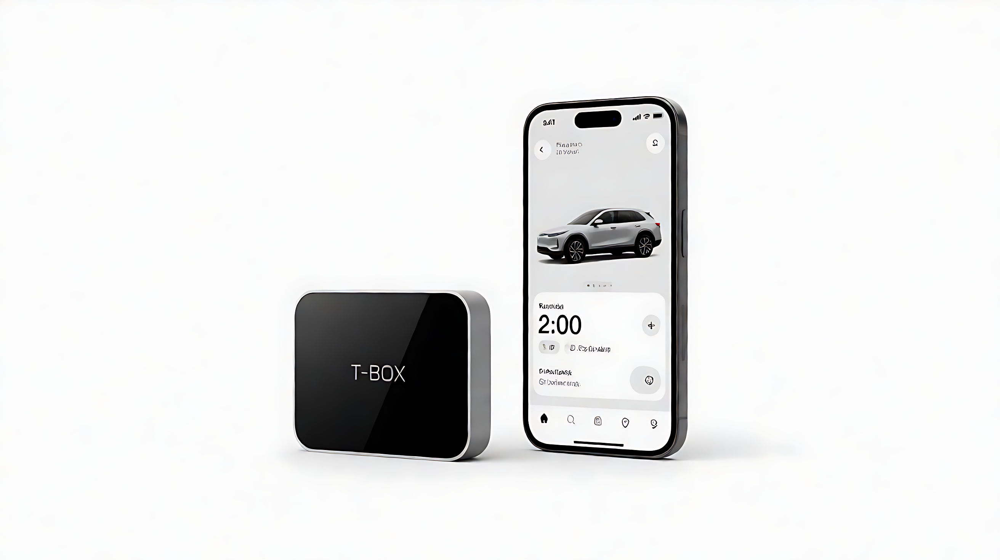
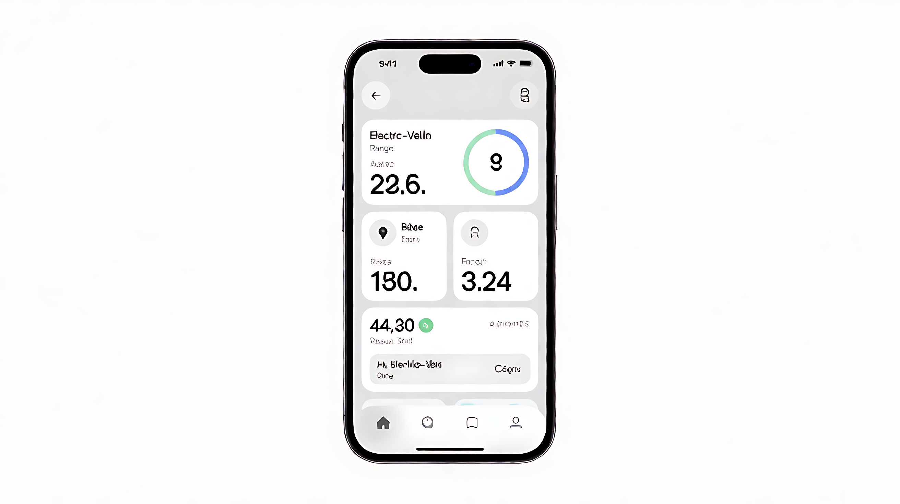

4GCat.1全国覆盖低功耗通讯
BLE5.0近场手机直连配置
云端数据看板 + API
≤1s状态上报时延
Overview
让每一辆车，都连在云上
IOT 模块是整车的联网入口：把位置、电量、故障与骑行行为实时上传云端，运营方在后台就能看到每一辆车的健康度——共享调度、换电提醒、防盗追踪，一套数据全打通。
Specifications
典型参数
以下为标准平台参数，ODM 项目可按车型重新定义。
| 通讯方式 | 4G Cat.1 / BLE 5.0 |
|---|---|
| 定位 | GPS / 北斗 双模 |
| 供电 | 整车 12–72V 直供，低功耗待机 |
| 工作温度 | -30℃ ~ +80℃ |
| 云端平台 | 数据看板 + 开放 API |
| 数据安全 | 加密通道，分级权限 |
|---|---|
| 远程能力 | OTA、诊断、参数下发 |
| 典型时延 | 状态上报 ≤ 1s |
| 防护等级 | IP67 |
| 部署 | 控制器 / 仪表无缝对接 |

CLOUD PLATFORM
从单车数据采集到车队运营看板，云端一目了然
01
车辆定位
GPS / 北斗双模，轨迹可回溯。
02
远程诊断
故障码云端读取，工单自动派发。
03
OTA 升级
固件与策略远程下发。
04
电池监测
电压 / 温度 / 循环次数全采集。
05
智能防盗
异动告警 + 电子围栏。
06
运营看板
资产、续航、利用率一屏统览。
Hardware
一颗模组，接入整车
IOT 模组作为 CAN 节点与控制器 / 仪表对接，无需改动车型主电路。
- 标准 CAN 接口，即插即用
- 4G + BLE 双模冗余
- 宽压供电，适配全平台

Platform
一套云端，管整支车队
开放 API 对接客户的调度、换电与 CRM 系统，数据所有权归运营方。
- 实时资产看板
- 续航预测与换电提醒
- 分级权限 + 加密通道

Selection
按车型选型

共享出行
定点还车 · 异动告警 · 骑行计费联动
查看推荐方案 →换电运营
电量预测 · 换电工单 · 资产盘点
查看推荐方案 →车队管理
调度优化 · 健康度评分 · 远程锁车
查看推荐方案 →